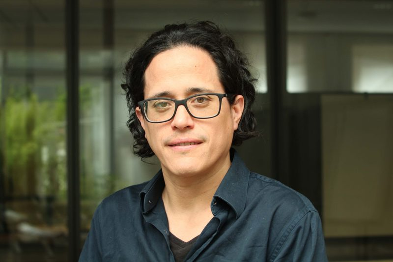
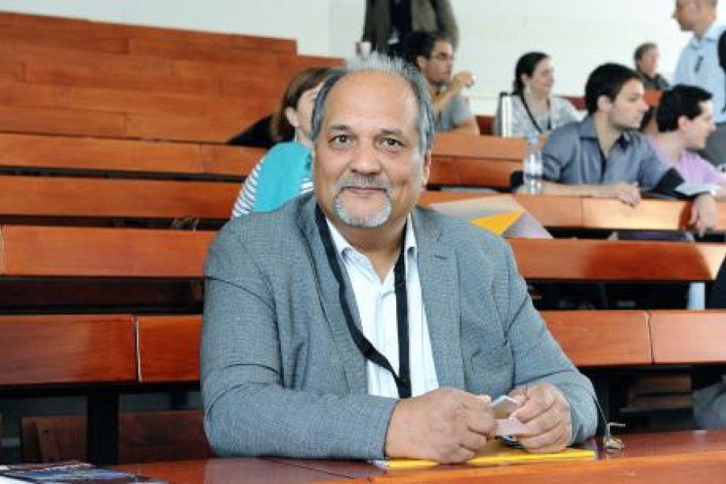
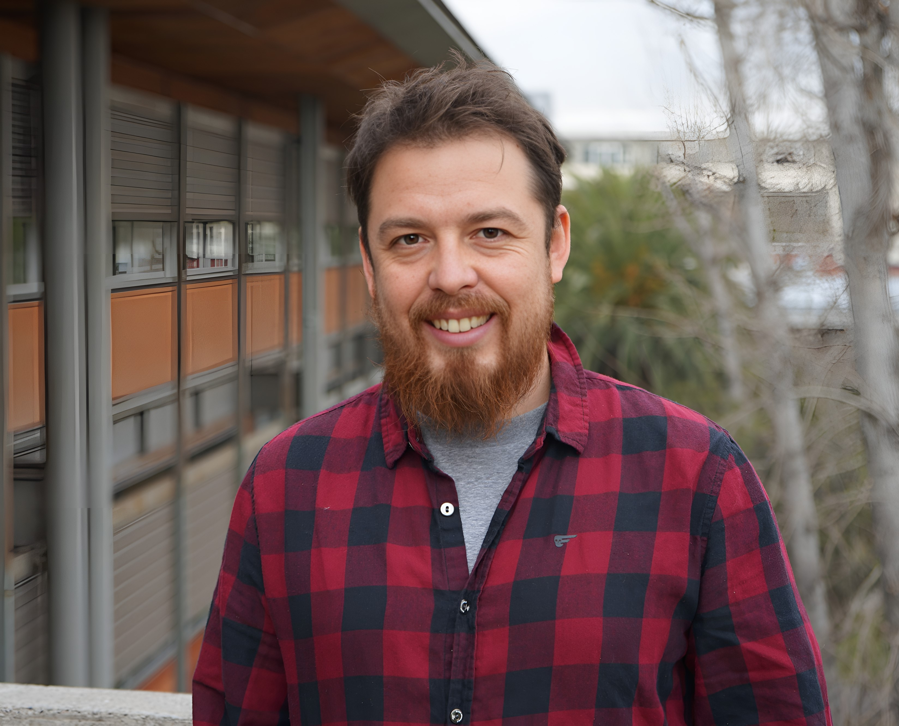
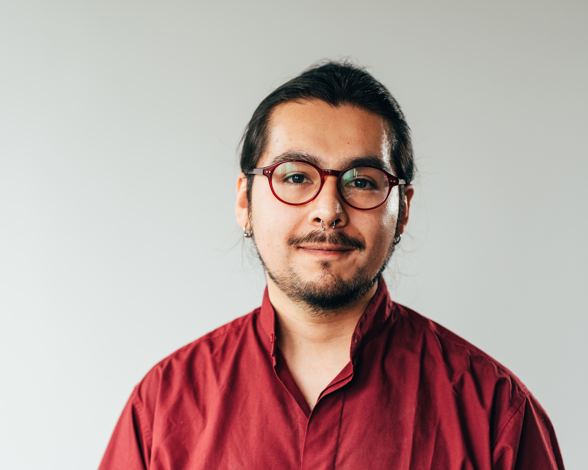
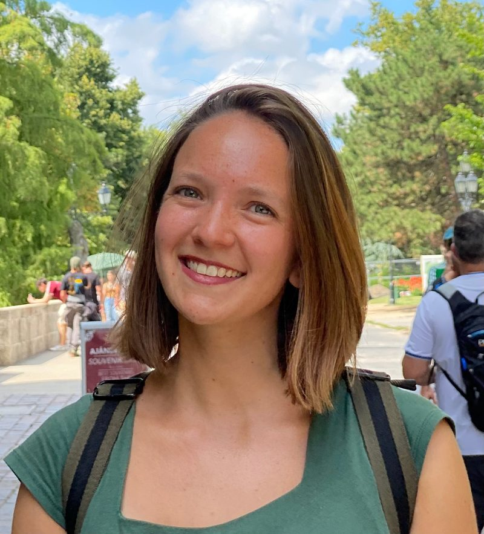
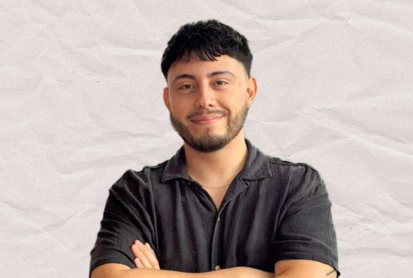
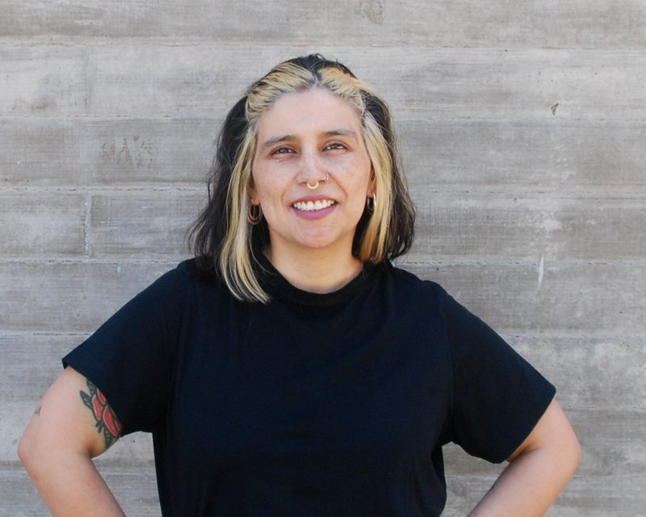
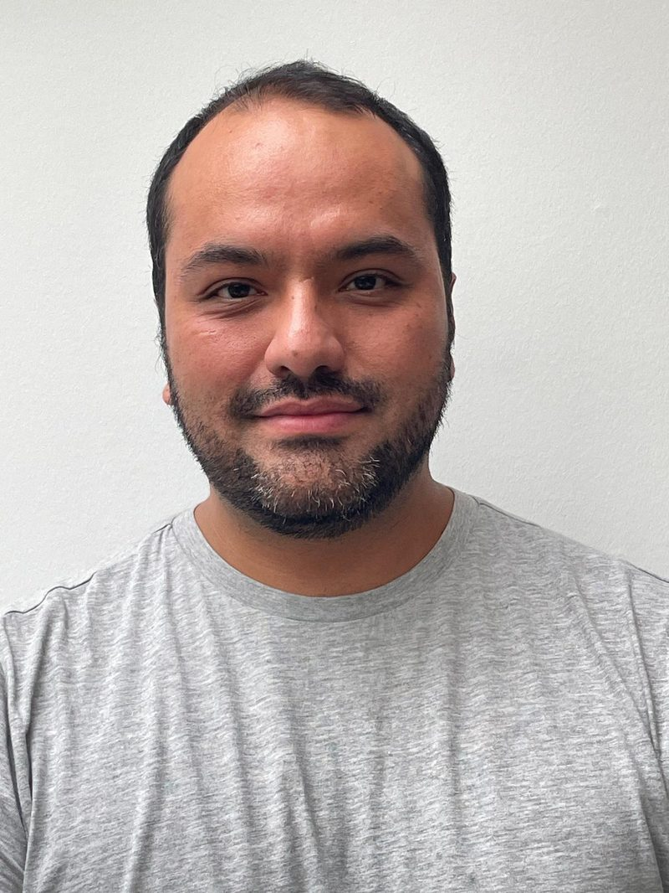

Gabriel Otero
Investigador principal
Escuela de Sociología, FCSH, UDP
Académico UDP, director del Observatorio de Desigualdades, investigador asociado COES. PhD en Human Geography, Utrecht University.
Investigadores, colaboradores y asesores del proyecto Fondecyt de Iniciación N°11240249.

Investigador principal
Escuela de Sociología, FCSH, UDP
Académico UDP, director del Observatorio de Desigualdades, investigador asociado COES. PhD en Human Geography, Utrecht University.

Asesor senior
ICSO, UDP
Doctor en Sociología, Universidad de Toronto. Investigador de cohesión social, redes personales y capital social. Más de 100 artículos académicos.

Colaborador
Pontificia Universidad Católica de Chile
Sociólogo (U. de Concepción), magíster y doctorando en Sociología (PUC). Investiga actitudes hacia la desigualdad, redistribución e identidad social.

Colaborador
Universidad de Bremen, Alemania
Investigador doctoral en BIGSSS, Universidad de Bremen. Sociólogo (U. de Concepción), magíster en Sociología (PUC). Especialista en desigualdad de clase y justicia distributiva.

Colaboradora
Universidad Diego Portales
Socióloga (PUC), magíster en Métodos para la Investigación Social (UDP). Investiga la intersección entre estratificación objetiva-subjetiva y actitudes políticas.

Colaborador
Universidad de Chile / COES
Sociólogo (U. de Chile), magíster (c) en Sociología (PUC), becario ANID. Asistente de investigación en COES. Especialista en estratificación y metodologías cuantitativas.

Comunicaciones digitales
ICSO – UDP
Periodista y magíster en Políticas Públicas (FEN, U. de Chile). Diploma en Diseño Gráfico Digital. Combina comunicación estratégica, divulgación académica y narrativa digital.

Colaborador
Hertie School / Humboldt-Universität zu Berlin
Sociólogo (U. de Chile), magíster en Sociología (PUC). Doctorando en grupo DYNAMICS (Hertie School / HU Berlin). Excoordinador técnico de ELSOC-COES.
Estudiantes de pregrado y posgrado que desarrollan sus tesis en el marco del proyecto.
Por confirmar
Tesis de pregrado o magíster
Por confirmar
Tesis de pregrado o magíster
Por confirmar
Tesis de pregrado o magíster
Por confirmar
Tesis de pregrado o magíster
Investigador principal
Escuela de Sociología, FCSH, UDP
Investigador principal del proyecto Fondecyt de Iniciación «Class, Personal Networks and Political Attitudes» (2024–2026). Se desempeña como investigador asociado en la línea Geografías del Conflicto y la Cohesión del COES, director del Observatorio de Desigualdades de la Universidad Diego Portales, y académico del Departamento de Sociología de la misma casa de estudios.
Sociólogo por la Universidad Diego Portales y magíster en Análisis Sistémico Aplicado a la Sociedad por la Universidad de Chile. Doctor (PhD) en Human Geography and Spatial Planning, Utrecht University, Países Bajos. Ha publicado en European Sociological Review, Social Forces, Socio-Economic Review, The British Journal of Sociology y Urban Studies.
Asesor senior
ICSO, UDP
Doctor en Sociología por la Universidad de Toronto, Canadá. Investigador principal del proyecto Fondecyt Regular N°1171426 «La estructura de la sociabilidad en Chile y sus consecuencias para nuestra convivencia» (2017–2022), basado en el Estudio Longitudinal Social de Chile (ELSOC) de COES.
Ha publicado cuatro libros y más de un centenar de artículos académicos en revistas nacionales e internacionales. Su investigación se centra en cohesión social, inequidad y capital social, así como en instituciones políticas informales y política subnacional.
Colaborador
Pontificia Universidad Católica de Chile
Sociólogo por la Universidad de Concepción y magíster en Sociología por la Pontificia Universidad Católica de Chile, donde actualmente cursa el doctorado en Sociología. Se desempeña como investigador en la Agencia de Calidad de la Educación.
Su investigación se centra en las actitudes hacia la desigualdad y la educación, con énfasis en métodos cuantitativos. Su tesis doctoral analiza las preferencias por la redistribución en Chile, considerando el rol de la homofilia, la identidad social y la percepción de justicia.
Colaborador
Universidad de Bremen, Alemania
Investigador doctoral de la Bremen International Graduate School of Social Sciences (BIGSSS) en la Universidad de Bremen, Alemania. Sociólogo de la Universidad de Concepción y magíster en Sociología de la Pontificia Universidad Católica de Chile.
Sus intereses incorporan sociología económica y estratificación social, con énfasis en desigualdades de clase, procesos subjetivos relacionados con la desigualdad económica y justicia distributiva. Ha publicado en Estudios Sociológicos, Social Justice Research, Frontiers in Sociology e International Journal of Sociology.
Colaboradora
Universidad Diego Portales
Socióloga por la Pontificia Universidad Católica de Chile y magíster en Métodos para la Investigación Social por la Universidad Diego Portales. Cuenta con cuatro años de experiencia como asistente de investigación en proyectos nacionales empleando técnicas de análisis cuantitativo y cualitativo.
Sus intereses se centran en la intersección entre dimensiones subjetivas y objetivas de la estratificación social, la construcción del estatus subjetivo y la experiencia de clase, y su relación con las actitudes políticas y económicas.
Colaborador
Universidad de Chile / COES
Sociólogo por la Universidad de Chile y magíster (c) en Sociología por la Pontificia Universidad Católica de Chile. Becario del Programa de Capital Humano Avanzado de ANID para estudios de magíster (2024–actualidad). Se desempeña como asistente de investigación en el Observatorio de Cohesión Social (OCS) del COES.
Sus intereses se centran en estratificación social, justicia distributiva, creencias sobre la desigualdad y legitimación de la mercantilización de servicios sociales, con énfasis en metodologías cuantitativas multinivel, longitudinal y causal.
Comunicaciones digitales
ICSO – UDP
Periodista y magíster en Políticas Públicas por la Facultad de Economía y Negocios de la Universidad de Chile. Posee un Diploma en Diseño Gráfico Digital y cursa un Diploma en Neuromarketing. Su trayectoria combina comunicación estratégica, campañas políticas y divulgación científica.
Actualmente está a cargo de la difusión de Clima Social – Encuesta ICSO UDP y participa en proyectos de investigación financiados por ANID. Presenta los resultados de investigación de manera clara, rigurosa y accesible para distintos públicos.
Colaborador
Hertie School / Humboldt-Universität zu Berlin
Sociólogo por la Universidad de Chile y magíster en Sociología por la Pontificia Universidad Católica de Chile. Actualmente cursa su doctorado en el grupo DYNAMICS (Hertie School y Humboldt-Universität zu Berlin). Entre 2017 y 2022 fue Coordinador Técnico de la Encuesta Longitudinal Social de Chile (ELSOC) en el COES.
Su agenda aborda redes sociales interpersonales, movilidad social, desigualdad y actitudes políticas, con énfasis en métodos cuantitativos avanzados y enfoques relacionales. Ha publicado en Social Networks, European Journal of Social Psychology y Papers.
Financiado y apoyado por